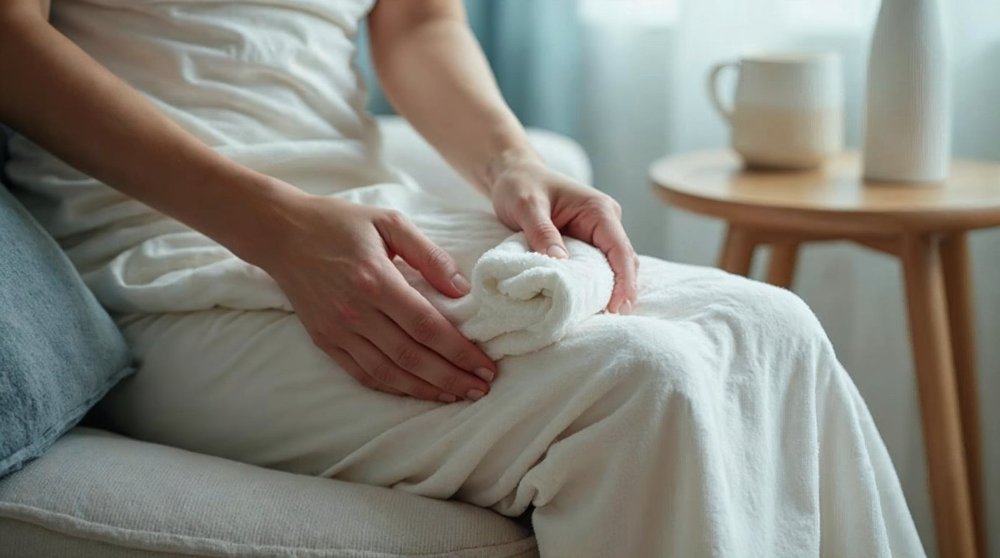
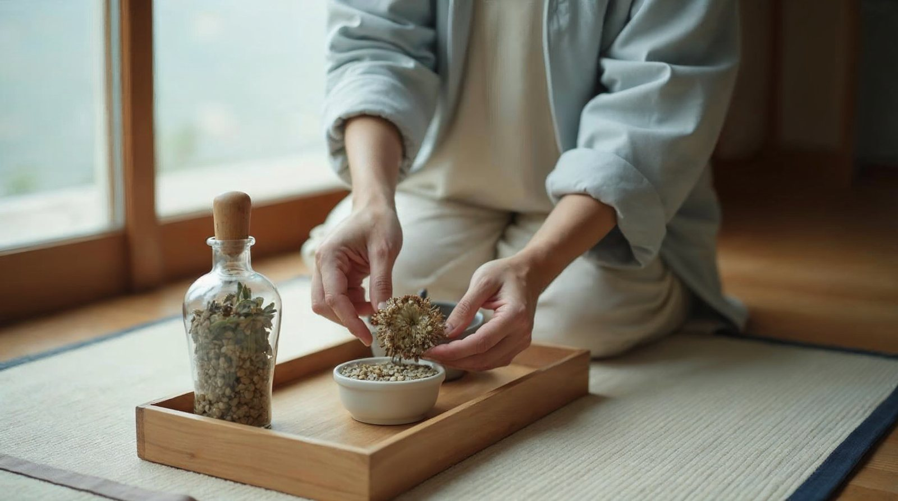

이종호 한의사 감수좋은꿈참사랑한의원 대표원장 (한의사 면허번호 19769)발행 2026-11-23 · 수정 2026-11-26
이 글의 차례
- 왜 이런 불편이 생길 수 있나요
- 비슷해 보이는 겨울 피부 증상과는 어떻게 구분하나요?
- 먼저 이렇게 여쭙니다
- 일상에서 먼저 해 볼 수 있는 것
- 겨울 하루를 이렇게 준비해 보세요
- 상황별 예시
- 스스로 점검해 보세요
- 한의학에서는 찬 것에 대한 반응을 어떻게 바라보나요?
- 자주 하는 오해는 무엇인가요?
- 여름에는 무엇을 조심하나요?
- 아이에게 생겼다면 어떻게 살피나요?
- 부풀어 올랐을 때 집에서는 어떻게 하나요?
- 피로와 잠은 왜 함께 살피나요?
- 함께 지내는 사람에게 무엇을 알려 둘까요?
- 한의원에서 함께 살필 수 있는 경우
- 첫 진료는 어떤 순서로 진행되나요?
- 다시 오셨을 때는 무엇을 비교하나요?
- 얼마나 지켜보고 언제 상담할까요
- 이렇게 기록해 오시면 상담이 쉬워집니다
- 이런 증상은 먼저 확인이 필요합니다
- 함께 읽으면 좋은 글
찬 바람이나 찬물에 닿은 자리가 부풀고 가려운 것은 피부가 추위에 예민하게 반응하는 경우가 있어, 어떤 상황에서 얼마 뒤에 생기는지와 범위, 함께 오는 증상을 먼저 확인합니다.
겨울 아침 출근길에 찬 바람을 맞은 얼굴과 손이 붉게 부풀거나, 찬물로 설거지한 손이 가렵게 부어오른다는 분이 있습니다. 한강 노들섬 근처나 노량진 수산시장 앞처럼 바람이 찬 곳을 지날 때 더 심해지기도 합니다.
왜 이런 불편이 생길 수 있나요
- 차가워진 피부가 다시 따뜻해지는 과정에서 히스타민 같은 물질이 나와 부풀 수 있습니다.
- 얼굴과 손처럼 바깥 공기에 많이 닿는 곳에 먼저 나타나는 경우가 많습니다.
- 피로하거나 잠이 부족할 때 더 예민해진다는 분도 있습니다.
- 한의학에서는 손발이 차고 추위를 많이 타는 경향도 함께 살핍니다.
- 감기를 앓고 난 뒤처럼 몸이 지친 시기에 처음 시작되었다는 분도 있습니다.
- 찬 바람에 젖은 피부가 닿으면 더 빨리 식어 반응이 커지기도 합니다.
이런 반응은 찬 것에 닿는 순간보다, 차가워졌던 피부가 실내에 들어와 다시 따뜻해질 때 두드러지는 경우가 많습니다. 그래서 바깥에서는 괜찮다가 사무실이나 집에 들어온 뒤 얼굴과 손이 화끈거리며 부풀어 오른다고 말씀하시는 분이 많습니다.
대개 닿은 자리에 생겨 30분에서 한두 시간 사이에 가라앉지만, 몸이 넓게 찬 것에 닿으면 반응도 넓어질 수 있습니다. 그래서 언제, 어디에, 얼마나 넓게 닿았는지를 함께 보는 것이 중요합니다.
비슷해 보이는 겨울 피부 증상과는 어떻게 구분하나요?
- 손가락과 발가락이 보랏빛으로 붓고 가렵거나 화끈거리며 며칠씩 이어진다면 동창(얼었다 녹으며 생기는 염증)과 구분해 봅니다.
- 찬 것에 닿으면 손가락이 하얗게 질렸다가 파랗게, 다시 붉게 변한다면 혈관이 오므라드는 다른 현상일 수 있어 내과 확인을 권합니다.
- 부풀지는 않고 하얗게 일어나며 갈라지고 가렵다면 건조함 쪽에 가깝습니다.
- 찬 것과 관계없이 저녁이나 샤워 뒤에 올라온다면 다른 두드러기와 함께 살펴봅니다.
찬 것에 닿은 자리만 부풀었다가 몇 시간 안에 흔적 없이 사라지는 모습이 반복된다면, 추위에 대한 두드러기 반응을 먼저 생각해 보고 기록을 함께 쌓아 갑니다.
먼저 이렇게 여쭙니다
- 찬 것에 닿고 얼마 뒤에 부풀어 오르나요?
- 부푼 자리가 닿은 곳에만 생기나요, 온몸으로 퍼지나요?
- 찬 음료를 마시면 입안이나 목이 붓는 느낌이 있나요?
- 어지럽거나 숨이 찬 적이 있나요?
- 처음 시작된 것이 언제이고, 그 무렵 감기를 앓거나 몸이 크게 지쳤나요?
- 손발이 늘 차고 추위를 많이 타시나요?

일상에서 먼저 해 볼 수 있는 것
- 겨울 외출 때 장갑, 마스크, 목도리로 피부 노출 줄이기
- 설거지는 미지근한 물로 하기
- 입안이 붓는 느낌이 있었다면 찬 음료 피하기
- 생기는 상황과 시간을 사진과 함께 기록하기
- 땀이나 물기가 남은 채로 찬 바람을 맞지 않도록 씻은 뒤 잘 말리고 나가기
- 실내에 들어온 뒤에는 뜨거운 물보다 미지근한 물로 손을 천천히 녹이기
겨울 하루를 이렇게 준비해 보세요
- 외출 전: 얼굴에 보습제를 바르고, 장갑과 목도리, 마스크를 현관 가까이에 두기
- 출퇴근길: 바람이 센 강변이나 큰길은 되도록 짧게 지나고, 버스나 지하철을 기다릴 때는 바람을 등지고 서기
- 일터에서: 찬물이 나오는 곳에서는 장갑을 끼거나 온수로 바꾸기
- 집에서: 찬 음료와 아이스크림은 입안이 붓는 느낌이 없었던 분만 조금씩, 샤워 끝에 찬물 끼얹기는 피하기
옷차림을 바꾼 날과 바꾸지 않은 날을 나란히 적어 두면 어떤 노출에 더 크게 반응하는지 알기 쉬워집니다.
상황별 예시
- 예를 들어 이른 아침 자전거로 출근하며 찬 바람을 정면으로 맞는 경우라면, 얼굴과 손을 덮는 장비를 갖추고 출근 시간대의 노출을 줄인 날과 비교해 볼 수 있습니다.
- 예를 들어 식당이나 수산물 가게처럼 찬물과 얼음을 자주 만지는 일을 하는 경우라면, 면장갑 위에 고무장갑을 끼고 쉬는 시간에 손을 천천히 녹이는 습관을 함께 정합니다.
- 예를 들어 감기를 크게 앓고 난 겨울부터 처음 생겼다는 경우라면, 그 무렵의 피로와 잠, 지금의 회복 흐름을 함께 여쭙습니다.
- 예를 들어 겨울에 샤워를 마치고 젖은 머리로 찬 바깥에 나가면 얼굴과 목이 부푼다는 경우라면, 머리와 몸을 충분히 말린 뒤 나가는 날과 그렇지 않은 날을 나눠 적어 봅니다.
- 예를 들어 찬 음료를 마신 뒤 입안이 붓는 느낌이 있었던 경우라면, 그 일이 있었던 날과 음료를 적어 두고 진료 때 가장 먼저 말씀해 주세요.
상황은 달라도, 무엇에 얼마나 오래, 얼마나 넓게 닿았는지를 적어 두는 것이 공통된 출발점입니다. 그 기록이 쌓이면 겨울 생활에서 무엇을 먼저 바꿀지 정하기 쉬워집니다.
스스로 점검해 보세요
- 찬 바람이나 찬물에 닿은 자리에만 부풀어 오르나요?
- 실내에 들어와 몸이 녹을 때 더 심해지나요?
- 부푼 자리가 몇 시간 안에 흔적 없이 사라지나요?
- 피곤하거나 잠이 부족한 주에 더 자주 올라오나요?
- 찬 음료를 마신 뒤 입안이나 목이 붓는 느낌이 있었나요?
- 손가락이 하얗게 질렸다가 파랗게 변한 적이 있나요?
다섯째 항목에 해당한다면 진료 때 먼저 말씀해 주시고, 마지막 항목에 해당한다면 내과 확인도 함께 받아 보세요.
한의학에서는 찬 것에 대한 반응을 어떻게 바라보나요?
한의학에서는 몸의 겉을 지키는 기운을 위기라고 부르고, 이 기운이 약해지면 바깥의 찬 기운에 피부가 쉽게 반응한다고 봅니다. 손발이 늘 차고, 조금만 바람을 맞아도 콧물이 나며, 쉽게 지치는 분에게서 이런 모습이 함께 보이기도 합니다.
그래서 진료실에서는 부풀어 오르는 피부와 함께 추위를 얼마나 타는지, 땀이 쉽게 나는지, 감기에 잘 걸리는지, 아랫배와 손발이 찬지를 함께 여쭙습니다. 노출을 줄이는 생활 관리와 함께 이런 몸의 경향을 살피면, 겨울을 보내는 방법을 더 구체적으로 정리할 수 있습니다.
자주 하는 오해는 무엇인가요?
- 찬 것에 자주 닿으면 몸이 적응해 괜찮아질 것이라는 생각: 일부러 찬물에 오래 담그거나 찬물 샤워로 버티는 것은 권하지 않습니다.
- 손만 부풀면 손만 조심하면 된다는 생각: 몸이 넓게 찬 것에 닿으면 반응도 넓어질 수 있어, 겨울 물놀이와 찬물 목욕도 함께 조심해 주세요.
- 뜨거운 물로 빨리 녹이면 덜 부풀 것이라는 생각: 갑자기 데우면 더 화끈거리고 부풀 수 있어 미지근한 물로 천천히 녹이는 편이 좋습니다.
- 겨울에만 생기니 여름에는 상관없다는 생각: 여름에도 에어컨 바람이나 찬 음료, 찬물 수영에서 반응하는 분이 있습니다.
여름에는 무엇을 조심하나요?
찬 것에 대한 반응은 겨울에 두드러지지만, 여름에도 계기가 있습니다. 냉방이 센 실내에서 오래 지내거나, 땀 흘린 몸으로 에어컨 바람을 바로 맞을 때, 얼음이 든 음료를 한꺼번에 마실 때 반응했다는 분이 있습니다.
- 냉방이 센 곳에서는 얇은 겉옷을 챙기고, 바람이 몸에 바로 닿지 않는 자리에 앉기
- 땀을 흘린 뒤에는 먼저 닦고 나서 시원한 곳에 들어가기
- 계곡이나 바다, 수영장에 들어갈 때는 혼자 들어가지 말고 손발부터 천천히 적셔 보기
- 찬 음료는 얼음을 빼고 조금씩 마시기
아이에게 생겼다면 어떻게 살피나요?
아이는 찬물 놀이나 눈싸움 뒤에 손과 얼굴이 부풀어도 말로 설명하기 어려워합니다. 놀고 들어온 뒤 손과 볼을 한 번 살펴보시고, 부풀었다면 사진과 시간을 남겨 두세요.
어린이집이나 학교에 이런 반응이 있다는 것을 미리 알려 두면 겨울 바깥 놀이와 물놀이 때 함께 살펴 주실 수 있습니다.
부풀어 올랐을 때 집에서는 어떻게 하나요?
찬 것에 닿아 부풀어 올랐다면 먼저 따뜻한 실내로 들어와 젖은 옷이나 장갑을 벗고, 미지근한 물이나 체온으로 천천히 녹여 주세요. 뜨거운 물이나 난로 바로 앞에서 급히 데우면 화끈거림이 더 심해질 수 있습니다.
가려워도 손톱으로 긁지 말고 손바닥으로 가볍게 눌러 주세요. 그 사이 사진을 찍고, 무엇에 몇 분 닿았는지, 몇 분 뒤 부풀었는지 적어 두면 다음 진료 때 큰 도움이 됩니다.
처방받은 약이 있다면 안내받은 대로 드시고, 임의로 양을 늘리지 마세요.
피로와 잠은 왜 함께 살피나요?
같은 찬 바람을 맞아도 어느 날은 괜찮고 어느 날은 크게 부풀었다는 분이 많습니다. 기록을 모아 보면 잠이 짧았던 주, 야근이 이어진 주, 감기 기운이 있던 주에 더 쉽게 올라온 경우가 있습니다.
그래서 진료실에서는 부푼 날의 상황과 함께 그 주의 잠과 피로를 꼭 여쭙습니다. 잠드는 시간을 일정하게 하고 무리한 일정을 조금 덜어 내는 것도 겨울을 보내는 방법 가운데 하나입니다.
함께 지내는 사람에게 무엇을 알려 둘까요?
가족이나 함께 일하는 사람에게 찬 것에 닿으면 피부가 부풀어 오른다는 것을 미리 알려 두면, 겨울 바깥 일이나 찬물을 다루는 일을 나눠 맡기 쉬워집니다.
여럿이 물놀이나 겨울 바다에 가는 자리라면 미리 말해 두고 혼자 물에 들어가지 않는 편이 좋습니다.

한의원에서 함께 살필 수 있는 경우
- 찬 것에 닿으면 반복적으로 부풀어 오르는 경우 몸이 차고 예민한 편인지 함께 살핍니다.
- 손발이 늘 차고 추위를 많이 타는 경우 생활과 몸의 리듬을 함께 살핍니다.
- 피로와 잠 부족이 겹칠 때 심해지는 경우 함께 여쭙니다.
- 피부과나 내과 확인을 받고 생활 관리와 함께 몸의 흐름도 살피고 싶은 경우입니다.
좋은꿈참사랑한의원에서는 모든 분께 그렇듯 맥부터 짚으며 부풀어 오르는 상황과 범위를 여쭙고, 필요하면 혀(설진)도 살핀 뒤 침이나 한약 상담 등 상태에 맞는 방법을 정합니다. 원인 확인을 위한 검사가 필요해 보이면 다른 의료기관을 함께 안내합니다.
두드러기 때문에 드시는 약이 있다면 이름을 알려 주세요. 한약을 상담할 때는 지금 드시는 약을 먼저 확인하고, 임신 중이라면 먼저 말씀해 주시고 산부인과와도 상의해 주세요.
첫 진료는 어떤 순서로 진행되나요?
- 1. 가져오신 사진을 함께 보며 무엇에 닿고 몇 분 뒤에 부풀었는지 정리합니다.
- 2. 부푼 범위가 닿은 곳에만 있었는지, 몸으로 번졌는지, 사라지기까지 얼마나 걸렸는지 여쭙습니다.
- 3. 찬 음료 뒤 입안이 붓거나 어지러웠던 적이 있는지 꼭 확인합니다.
- 4. 맥을 짚고, 필요하다고 판단되면 혀의 모습도 함께 살핍니다.
- 5. 추위를 타는 정도, 손발의 온기, 땀, 감기에 잘 걸리는지, 잠과 피로를 여쭙습니다.
- 6. 상태에 맞는 방법을 정하고, 겨울 옷차림과 일터에서 바꿀 것을 알려 드립니다.
다시 오셨을 때는 무엇을 비교하나요?
두 번째 진료부터는 그사이 부풀어 오른 횟수와 상황, 범위를 처음 기록과 비교합니다. 옷차림을 바꾼 날과 바꾸지 않은 날의 차이, 피곤했던 주와 잘 쉰 주의 차이도 함께 봅니다.
부푼 범위가 넓어지거나 닿지 않은 곳까지 번진 적이 있다면, 피부과에서 원인을 확인받았는지 여쭙고 그 결과를 참고합니다.
얼마나 지켜보고 언제 상담할까요
- 노출을 줄이는 옷차림과 습관을 2주 정도 이어 가며, 올라온 상황과 범위를 기록해 볼 수 있습니다.
- 그사이에도 자주 올라오거나 닿지 않은 곳까지 번진다면 피부과에서 원인 확인을 받아 보시기를 권합니다.
이렇게 기록해 오시면 상담이 쉬워집니다
- 찬 것에 닿은 상황과 부풀기까지 걸린 시간
- 부푼 범위와 사라지기까지 걸린 시간, 사진
- 찬 음료 뒤 입안이 붓는 느낌이 있었는지
- 복용 중인 약
이런 증상은 먼저 확인이 필요합니다
- 찬물에 들어간 뒤 어지럽거나 쓰러질 것 같은 경우
- 입술·혀·목이 붓거나 숨쉬기 어려운 경우
이런 신호가 있으면 한의원보다 가까운 병원이나 응급실을 먼저 찾으세요.
함께 읽으면 좋은 글
- 추운 바깥에 나가거나 찬물에 손을 담그면 피부가 부풀어 오르는 한랭 두드러기는 어떻게 살피나요?
- 갑자기 두드러기가 올라올 때는 무엇을 먼저 확인하나요?
- 저녁만 되면 두드러기가 올라왔다 사라지기를 반복할 때는 어떻게 살피나요?

여쭙는 것
- 찬 것에 닿고 얼마 뒤에 부풀어 오르나요?
- 부푼 자리가 닿은 곳에만 생기나요, 온몸으로 퍼지나요?
- 찬 음료를 마시면 입안이나 목이 붓는 느낌이 있나요?
생활에서 해 볼 것
- 겨울 외출 때 장갑, 마스크, 목도리로 피부 노출 줄이기
- 설거지는 미지근한 물로 하기
- 입안이 붓는 느낌이 있었다면 찬 음료 피하기
한의원에서 함께 살필 것
- 찬 것에 닿으면 반복적으로 부풀어 오르는 경우 몸이 차고 예민한 편인지 함께 살핍니다.
- 손발이 늘 차고 추위를 많이 타는 경우 생활과 몸의 리듬을 함께 살핍니다.
- 피로와 잠 부족이 겹칠 때 심해지는 경우 함께 여쭙니다.
먼저 확인이 필요한 신호
- 찬물에 들어간 뒤 어지럽거나 쓰러질 것 같은 경우
- 입술·혀·목이 붓거나 숨쉬기 어려운 경우
한눈에 보는 표
| 구분 | 핵심 |
|---|---|
| 여쭙는 것 | 찬 것에 닿고 얼마 뒤에 부풀어 오르나요? 부푼 자리가 닿은 곳에만 생기나요, 온몸으로 퍼지나요? |
| 생활에서 해 볼 것 | 겨울 외출 때 장갑, 마스크, 목도리로 피부 노출 줄이기 설거지는 미지근한 물로 하기 |
| 한의원에서 함께 살필 것 | 찬 것에 닿으면 반복적으로 부풀어 오르는 경우 몸이 차고 예민한 편인지 함께 살핍니다. 손발이 늘 차고 추위를 많이 타는 경우 생활과 몸의 리듬을 함께 살핍니다. |
| 먼저 확인이 필요한 신호 | 찬물에 들어간 뒤 어지럽거나 쓰러질 것 같은 경우 입술·혀·목이 붓거나 숨쉬기 어려운 경우 |
자주 묻는 질문
겨울 수영은 해도 되나요?
찬물에 온몸이 닿으면 크게 반응할 수 있어, 원인을 확인하기 전에는 피하시는 것을 권합니다.
따뜻하게만 하면 괜찮나요?
노출을 줄이는 것이 기본입니다. 반복된다면 언제, 무엇에 닿았을 때 생겼는지 적어 오시면 함께 살핍니다.
찬 음료도 조심해야 하나요?
마신 뒤 입안이나 목이 붓는 느낌이 있었다면 피하시고, 그런 일이 있었다면 진료 때 꼭 알려 주세요.
아이에게도 생길 수 있나요?
아이에게도 나타날 수 있어, 찬물 목욕이나 겨울 물놀이 뒤 부풀어 오른 적이 있다면 진료 때 꼭 알려 주세요.
겨울마다 다시 생기나요?
몇 해 동안 겨울마다 반복되는 분도 있고 차츰 덜해지는 분도 있어 사람마다 다릅니다. 해마다 처음 올라온 때와 횟수를 적어 두시면 흐름을 함께 살피기 쉽습니다.
좋은꿈참사랑한의원은 재진 때 지난번 이야기부터 이어서 여쭙니다. 진료시간과 예약은 오시는 길에서 확인하세요.
어디서 상담받을 수 있나요?
좋은꿈참사랑한의원은 서울 동작구 만양로2길 2 신성빌딩 3층·5층(서울 동작구 상도동, 7호선 상도역 3번 출구 근처)에 있습니다. 한의사 3명(이종호 대표원장, 조영기 수석진료원장, 정원영 진료원장)이 진료합니다. 진료시간은 평일 09:30~20:00(점심 13:00~14:00), 토·일·공휴일 09:30~15:00이며, 방문 전 전화로 확인을 권합니다. 예약은 네이버 예약, 카카오톡 상담, 전화 02-815-7510로 받습니다.
이 글은 일반적인 건강 정보이며 개인의 진단이나 치료를 대신하지 않습니다. 증상이 있거나 복용 중인 약이 있다면 진료를 통해 확인하세요. 치료 효과는 개인마다 다를 수 있습니다.
작성 기준: 일반적으로 알려져 있는 건강 정보를 참고해 정리했습니다(대표원장 감수). 증상 기록은 1~2주 동안 하루 1회, 비슷한 시간에 적어 오시면 지난 상태와 비교하기 쉽습니다.